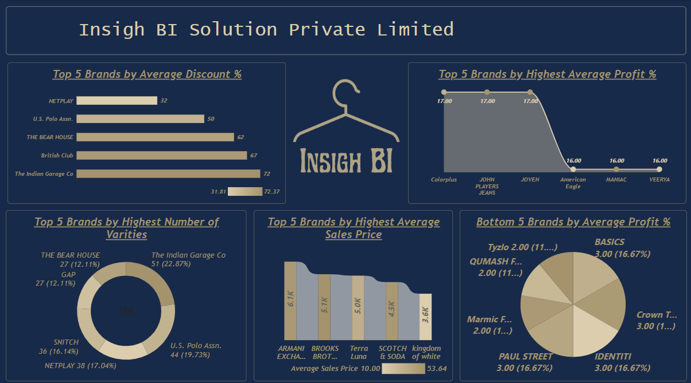

T-Shirts
Analysis
Analyzing men's fashion data to understand brand performance, pricing, discounts, product variety, and profitability. The analysis compares brands across key business metrics to identify stronger performers and areas of opportunity.
THE QUESTION
Problem Statement
Men's fashion businesses work with a large number of brands and products, making it difficult to compare pricing, discounts, product variety, and profitability through raw data alone. Understanding which brands perform strongly and which areas may require attention can help provide a clearer view of business performance. This project focuses on analyzing men's fashion data to compare brands across important commercial metrics and turn the information into clear, interactive business insights.
INSIDE THE REPORT
Page Features
01
Brand Overview
Provides an overview of the available men's fashion brands and their presence within the dataset. The page allows brands to be explored while providing an overall view of the available fashion data.

BRAND OVERVIEW
02
Brand Performance Analysis
Compares brands using average discount, average profit percentage, number of product varieties, and average sales price. The analysis highlights top-performing brands as well as brands appearing among the lower performers based on profitability.

BRAND PERFORMANCE ANALYSIS
METHODOLOGY
Analytical Approach
The project began by exploring the men's fashion dataset and understanding the information available for brands, products, pricing, discounts, and profitability.
Excel was used for initial data organization and exploration. The available brand and product information was reviewed to prepare the data for analysis and visualization.
The prepared data was then developed into an interactive Power BI report. DAX was used to create calculations and metrics required to compare brand performance across different business measures.
The final dashboard compares brands using average discount percentage, average profit percentage, number of varieties, and average sales price. It also highlights the top and bottom performing brands to make comparisons easier to understand.
THE BUILD
Tools & Technologies
GET IN TOUCH
Let’s Connect
Interested in working together, discussing a project, or simply connecting? I’d love to hear from you!
samiafathima28@gmail.com